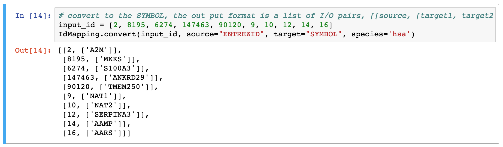

Utility and Tools
Tools in pypathway.utils including ID mapping tool, Graph plot tool and Chart plot tool.
ID mapping
This tool convert different id using by different database.
Database Source
Databases will be downloaded from www.bioconductor.org, please make sure that you have internet connection and ~200M desk speace.
Support species
anopheles, bovine, canine, chicken, chimp, ecoliK12, ecoliSakai, fly, human, mouse, pig, rat, rhesus, worm, xenopus, yeast, zebrafish
This can be viewed by class property SPECIES of IdMapping.

Support Id Types
ALIAS2PROBE, REFSEQ, ACCNUM, ENSEMBL, PATH, PROSITE, UNIPROT, CHRLOCEND, ALIAS, GO, IPI, CHRLOCCHR, ONTOLOGYALL, ENSEMBLTRANS, EVIDENCE, PFAM, MAP, ALIAS2EG, GENENAME, CHRLOC, CHR, ENTREZID, ENZYME, UNIGENE, ONTOLOGY, EVIDENCEALL, GOALL, ENSEMBLPROT, SYMBOL, PMID
This can be viewed by class property POSSIBLE_KEY of IdMapping.

Input Format
A list of id.
- For example, a list of ENTREZID:
[2, 8195, 6274, 147463, 90120, 9, 10, 12, 14, 16]
API
IdMapping provides class method convert and convert_to_dict. Both receive a list of id and return result in list form or dict form.
Parameters
- input_id: a list of source id, example: a list of ENTREZID:
[2, 8195, 6274, 147463, 90120, 9, 10, 12, 14, 16] - species: The species. Example:
yeast - source: The source ID name. Example:
ENTREZID - target: The target ID name. Example:
SYMBOL
Example
- IdMapping.convert

- IdMapping.convert_to_dict

Output format
-
IdMapping.convert: a list of results, each result contains the source id and a list of target id. Please refer to the notebook, the output filed Out[14] should explain this clearly.
-
IdMapping.convert_to_dict: a dict, key is the input ids and the value is a list of output ids.
Example notebook
Graph Plot Tool
This tool plot networkx.Graph and network.DiGraph in the output area in the notebook. Python package like networkx does not implement plot method and needs to export the graph to certain format and view via external tool. This utility speed up the work flow via reduce the the switch between different tools.
Input Format
The networkx.Graph and network.DiGraph
API
We implement a class named FromNetworkX which could be inited with a networkx.Graph or network.DiGraph class. FromNetworkX has a method called plot which plot the graph in the output area while the code is executed in the Jupiter notebook.
Example

Chart Plot tool
This tool works with echarts-python and creates interactive plot in the Jupyter notebook environment.
APIs
To build up of a chart object please refer to the echarts-python's docs.
The plot method receive a echarts-python's Chart instance and plot in the output area while the code is executed in the Jupiter notebook.
Example